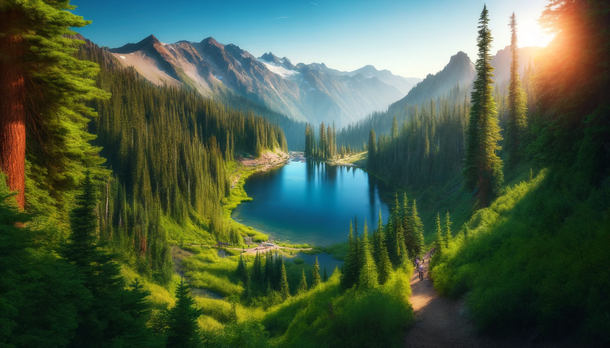

Explore the Wonders of Olympic National Park
Olympic National Park offers a unique and diverse environment, ranging from its stunning mountain peaks to lush rainforests and dramatic coastline. Known for its ecological diversity, the park is a haven for outdoor enthusiasts and nature lovers. Key attractions include Hurricane Ridge for panoramic views, the Hoh Rain Forest with its ancient groves, and the rugged beauty of Rialto Beach. Whether you're hiking, wildlife watching, or simply soaking in the natural beauty, Olympic National Park provides an unforgettable adventure.
